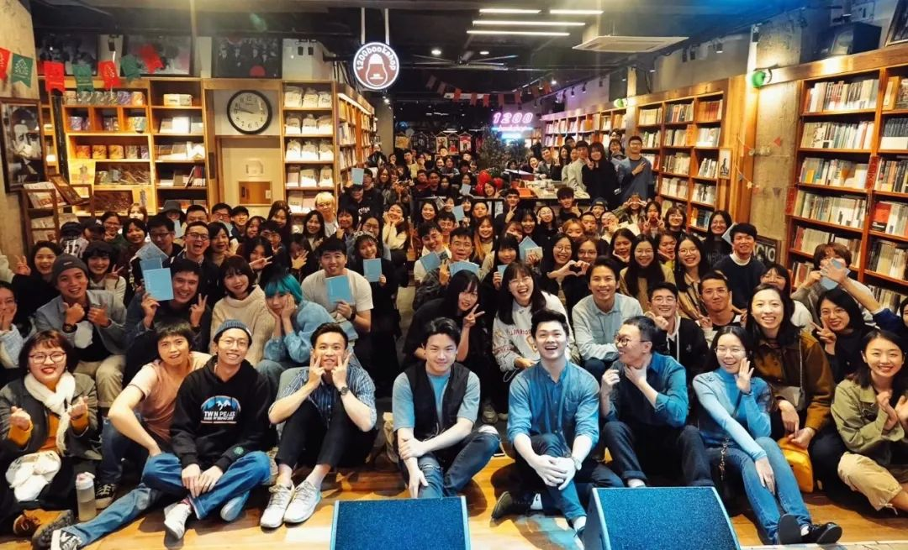

一家24小时书店疫情下的紧急自救
原文链接 备份链接 1200bookshop 记者：马越 编辑：牙韩翔 “ 广州第一家24小时不打烊的书店，第一次在夜晚熄了灯。脆弱的实体书店行业，也将迎来生存危机。 ” 2月24日，“二月二”这一天，由许知远联合创办的单向街书店，开始在 …

过去，网红店过网红店的，卖咖啡的卖咖啡，纯靠卖书的踏踏实实解决温饱，但如今，它们都“歇菜”了。
记者 | 张峰 实习生 | 陈淦博、余晓璐 编辑 | 沈小山
终于开店了。
过去的一个月，对于那些个体经营的实体书店来说，是危机击穿底线的三十天。2月5号，一份《2020年春节实体书店紧急调查分析报告》出炉，涉及1021家一线城市和80%的二三线及更下沉的书店，其中90%关闭，99%无正常收入。
当然，疫情带来的影响不仅仅是春节旺季收入的泡汤，现金流紧张带来的亏损压力，还直接加速了关于“怎么活”的讨论：过去，网红店过网红店的，卖咖啡的卖咖啡，纯靠卖书的踏踏实实解决温饱，但如今，它们都“歇菜”了。
书店“救穷”可耻，那是自己商业模式的问题，但“救急”是不得不出的招
2月20号，江西南昌市文化地标之一的青苑书店迎来了2020年的第一场书友会——线上微信读者群，主题是“阅读，能给我们带来什么？”
你可以想象200多人的群里，失去了公共空间，人们在各自封闭的家中，盘着腿，拿着书，听着语音，有的人被电话叫走临时关闭了界面，有的人要给孩子喂奶被迫走开，主办者不知道有多少人真的在听，但好在，有人在听。
青苑书店可能是最早在网上公开求助读者的独立书店之一。一月的最后一天，正是疫情最严重和混乱的时候，老板万国英在自家公众号发表了《我是青苑书店，请不要让我冻毙于风雪》的文章，推出了200-2000元不等的充值卡业务，“恳请读者伸出援手”，回笼现金流。
万国英没在文里说亏损有多严重，实际上是店里一个月支出30多万，年底刚刚和出版社、供应商结算，还有一批新书的预付款，加上给员工的年终奖，一月账上只剩下十多万。
一位带戴口罩的顾客在青苑书店
想着至少在春节止损，万国英延续了一年书店只放两天假：年三十和大年初一的传统，挺着开到了正月初四，发现一天见不到几个人，老读者老面孔都没了，开店还不如不开。几天后，政府下了文件，企业不得在2月10号之前营业，之后开店的时间延了又延。
“我们属于文化服务行业，最后一批复工。企业在自救，政府说疫情结束后可以打报告申请一个月到一个半月的免租，那都是以后的事儿，实际操作不知道遇到什么麻烦。”
远水解不了近渴，开店28年来，万国英第一次为青苑“活下来”担忧。
同样网上求助的还有广州的文化标签“1200bookshop”。这家在2015年就被CNN评选为世界17家最酷的书店之一的独立书店，开业以来从未熄灯，坚持24小时不打烊，不定时邀请保安、流浪歌手进行演讲，每周六晚十二点举办“深夜分享会”，成为社交媒体上“因为一个书店爱上一座城市”被提及率最高的小店之一。当然，所有的魅力源自线下，店门一关，几乎阻断了一切。

各类活动一直是1200bookshop的特色 图/甜约翰
1200的创始人刘二囍和他的团队更年轻，除了储值卡，还做了“盲选图书礼包”和文创产品，救急的姿势更丰富，不到两天，筹到了四十多万，能再撑两个月。
刘二囍承认这种“粉丝经济”带来的优势，过去的几年中，1200在扩张，几乎每年1200都会开新店，从个体化到公司化的运作下，将赚到的钱再投入到新的项目中，或许一定程度导致1200抵御风险的能力较弱。
在一些调查中提到，品牌连锁书店的实际情况在可控范围内，言几又公共事务总监周娟认为大企业过得可能“更不好”。言几又直营店和加盟店在疫情期间客流遭断崖式下滑，门店损失95%的营业额。即使第一时间线上推出了“同城配送”的补救措施，周娟也坦言，短期成效很难判断，只是做出的努力，总不能什么都不干。
言几又在全国各大城市商业区店铺平均面积达到了1000平方米，租金成了最大的支出，政府的减租意见是指导性的，和商场主体的沟通协商也只能是“尝试性的”。
而公开数据显示，2019年前十个月言几又销售额为6个亿，名列全国销售额十强书店第二名。
那些愿意发声、尝试转变的书店毕竟是少数，更多的书店散布在四五线城市，在街角默默无闻，仿佛岁月停滞了般，做着自己最擅长的事，悄无声息的消亡。
网上打五折，你会为了“氛围”为全价书买单吗？
实际上，实体书店对于这个时代来说，就像不愿离去的慢性病患者，疫情只是催化剂，过去的一年里，病情就有恶化的趋势。
万国英从2018年下半年开始感觉实体书店近五年短暂的春天过去了。网上折扣战不停，从原本年度性的“618”、“双11”、“双12”，到季度打折，2019年开始电商平台几乎每月都有促销折扣。
“打折打到我的朋友都去网上买，中华书局和三联，打到38折到42折，我们和出版社根本这个价进货都进不到。商务给我们店是68折，三联65折，怎么竞争？”
万国英提供的一个行业零售检测数据显示，2019年实体书店销售额下滑7.68%，网络销售增长24.7%。这其中还包括了新华书店这样巨无霸型的国有企业。
这些下滑来自于图书本身结构的变化和出版社的重心转移。

疫情期间的青苑书店
万国英发现，新华书店增长的销售额里，社科类图书提高了30%-40%，这个数据中，又有大部分来自于政党图书。万国英所在的江西省，新华书店社科类中政党图书比重甚至达到五成。如果剔除掉这些给政府部门的指定性刚需项目，实体书店的下滑远远不止之前的数字。
同时能选的书“越来越少”，《2019中国图书市场报告》显示，2019年新出出版品种数只有2018年的80%，没人能指望80种图书卖出100种的价格和销售。
和实体书店休戚相关的出版社越来越远离实体书店，整体向网络平台靠拢，出版社在实体书店的销售任务逐渐下降。据万国英了解，有电商平台强制设立固定利润额和返点要求，出版社要想获得销售数量和知名度的上涨，就只能被动地接受。
出版社摆脱平台掣肘的一种方式是自营网店，走的依旧是拦腰折扣方式。在天猫商务印书馆旗舰店里，2020年新版成语大词典原价99.8，折后价49.9元，立即下单再减3元，线下接近百元的图书，读者直接在出版社买，只要46.9元。
这就形成了新的局面，线上平台和出版社挤压实体书店生存空间，出版社利润受损开店单干，出版的做的事情越来越多，模糊了上下游关系，书店作为一个简单地安放图书的空间，变得越来越尴尬。
压力下万国英开始尝试之前从来不会做的事情：参与项目招标。帮助大学图书馆选书。而一般的图书馆大学图书馆招标基本上被新华书店拿走。
同时，文创和咖啡的营业也贡献了一部分收入。”他们都说你可以多元化经营，多做些事情。“万国英始终认为专注于图书和选书已经让团队十分吃力了。
”哪有那么多精力做别的呢？你本身行业就做不好，还做别的东西？我就是一个纯粹的店家。“
开店了，依然有人在求救
在全面复工的第一天，坚持了15年的单向街书店发文“众筹续命”，创始人许知远终究没能抗住。
1200开店了，疫情影响还没散去，依然没什么人，最多二十几个“勇士”，有客人来拍探店视频，更多的是直来直去，买书，走人，成交率反而上去了。阿尔贝·加缪《鼠疫》买断了库存，而之前买的最好的是胡适的《容忍与自由》。

1200bookshop 图/芳芳
店员在体育东店拍了个短视频，把一张写着红字“权力”的牌子放进鸟笼挂了起来，成为了新“宠物”。
1200bookshop依然在探索“特色”和“自由”，在商业和价值中间寻找平衡，针对图书的“盲选”和“药房”赋予的文化价值既带给了读者新鲜感，又能拉动销售额。
总结起来为什么能在危难之时获得巨大的粉丝支持，刘二囍觉得跟高大上的书店比较起来，1200可能更加有人情味和接地气，另一个是青年属性，就像垮掉的一代的这种集体式的精神。
1200bookshop 图/芳芳
这次疫情让1200的图书总监阿多海意识到之前对于线上的不够重视，而这种趋势“是不可阻挡的。”但是他能想到的也就是线上开书店卖书，限时秒杀，或者运营微信群。知名书店人孙谦在自己的直播中谈到新背景下的书店前景，套用了时下最流行的语言：“书店应该运营自己的私域流量。”
万国英担忧的依旧是书店仍然面临致命的生存压力，这次疫情波及的不止书店，还有出版社，恢复生产后去库存压力，加大折扣力度是不可避免的，这是商业规律，对她来说，也是无解的。
她担忧实体书店“青黄不接”，好的书店不能在这次“大难”里逃出来，“接”上去续命。
“经济的事情事后是可以弥补回来的，但是在文明的建设和沉淀中，文化属性可能就沉默了。”
万国英还想多进一些音乐、医学类的科普类的书，推出一些心理学的读书单。“因为在这个疫情以后，肯定很多人有些情绪上面的一些波动，还有对未来的一些担忧，在医学科技普及，还有情绪健康这一块，青苑是可以做一些事情的。”
来源｜南都周刊
END
欢迎分享到朋友圈，如想取得授权请邮件：newmedia@nbweekly.com。如果想找到小南，可以在后台回复「小南」试试看哦~

原文链接 备份链接 1200bookshop 记者：马越 编辑：牙韩翔 “ 广州第一家24小时不打烊的书店，第一次在夜晚熄了灯。脆弱的实体书店行业，也将迎来生存危机。 ” 2月24日，“二月二”这一天，由许知远联合创办的单向街书店，开始在 …
原文链接 备份链接 澎湃新闻记者 林平 2月26日上午，国务院应对新型冠状病毒感染肺炎疫情联防联控机制举行新闻发布会，介绍《关于政法机关依法保障疫情防控期间复工复产的意见》有关情况。 近期监狱病例激增所致，疫情如何在监狱传播？目前治疗情况 …
原文链接 备份链接 微信ID:sanlianshutong 『生活需要读书和新知』 《三联生活周刊》自1月20日通过微信公号发布第一条警示性报道——《“非典”幸存者礼露口述》开始，至2月26日为新冠疫情整体报道文章超过100篇。其中，《三 …
原文链接 备份链接 “ - 疫 情 之 下 - 疫情没有结束，我们的工作仍在继续。在这场“战疫”中，我们的付出终有所获，经营户对我们的理解，人民群众对我们的信任，鼓舞着我们在疫情蔓延的环境下不断向前。 ” 我的朋友是一名市场监督管理所的 …
原文链接 备份链接 “伊朗应对地震很有一套， 但是传染病防控，他们实在没经验” 视频截图：哈利其（图左）在发布会上不停擦汗。 当地时间2月25日，伊朗卫生部发言人、副部长哈利其（Iraj Harirchi）新冠病毒检测呈阳性。稍晚些时候， …